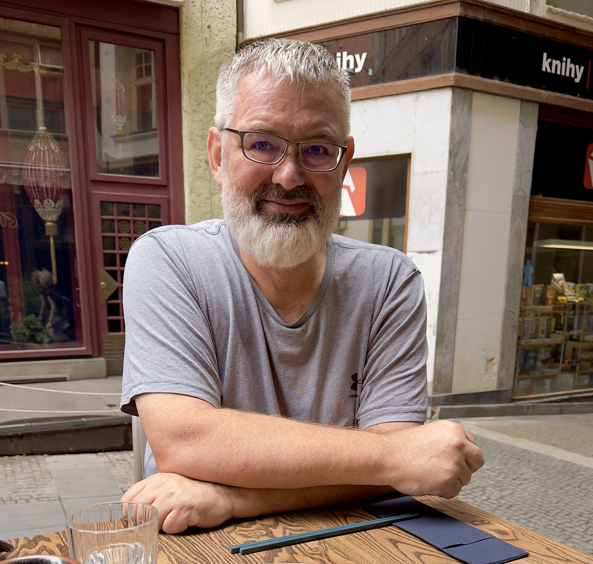
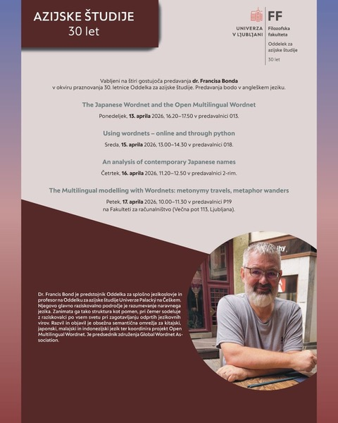

University of Ljubljana, Department of Asian Studies
These are the talks I will give in Ljubljana in April 2026. The first two talks cover wordnets, their construction, their use in lexical research, and how they enable multilingual comparison. They are adapted from the LOT Winter School 2026 course on lexical semantics. The third talk introduces new work on contemporary Japanese naming practices. The final one is about modelling metaphor and metonymy across languages with wordnets. It is an updated version of my 2026 Schultink Lecture..

| Day | Time | Room | Talk |
|---|---|---|---|
| Monday | 16:20–17:50 | Classroom 013 (Faculty of Arts) | The Japanese Wordnet and the Open Multilingual Wordnet |
| Wednesday | 13:00–14:30 | Classroom 018 (Faculty of Arts) | Using Wordnets — Online and Through Python |
| Thursday | 11:20–12:50 | Classroom 2-rim (faculty of Arts) | An Analysis of Contemporary Japanese Names |
| Friday | 10:00–11:30 | JOTA series: P19 (Faculty of Computer Science) | Multilingual Modelling with Wordnets: Metonymy Travels, Metaphor Wanders |

Francis Bond is Head of General Linguistics and a Professor at the Asian Studies Department, Palacký University, Czechia. His main research interest is in natural language understanding. He is interested in both structure and meaning, cooperating with researchers across the globe to provide open language resources. Francis has developed and released large semantic networks for Chinese, Japanese, Malay and Indonesian and coordinates the Open Multilingual Wordnet. He is president of the Global Wordnet Association.
He received a BA in 1988, a BEng (1st) in 1990 and a PhD in 2001, all from the University of Queensland. He worked on machine translation and natural language understanding at Nippon Telegraph and Telephone Corporation from 1991 to 2006. From 2006–2009 he worked at the National Institute of Information and Communications Technology in Japan, where his focus was on open source natural language processing. From 2009 to 2022 he worked at Nanyang Technological University, where he worked on multilingual meaning representation and digital humanities.
Source code available at https://github.com/bond-lab/talks-2026-Ljubljana under a Creative Commons Attribution 4.0 International Licence — CC BY 4.0.